o awen toki la ala li pakala v. 1
toki open
o kama pona tawa nasin ike wawa pi pona ilo.
o lukin pona e lipu ni: sina jan sona.
lon lipu ni la sina ken kama sona e sona ale pi nasin pona ilo.
o awen sona e ni — pali ike wan la ale li ken pakala!
o awen toki la ala li pakala v. 1
pona pi ilo pakala
pona pi ilo pakala
tenpo li weka tan ilo tenpo, anu pali pakala mute li lon, la ilo pakala li pakala. nasin taso pi pona ona li pona pi ilo lili ale ona lon pini ala pi ilo tenpo.
ilo pakala li sama ni
|
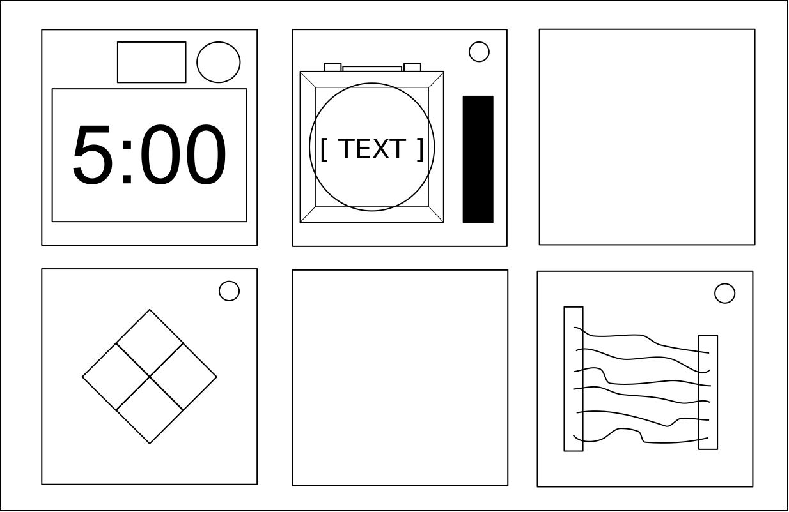 sinpin |
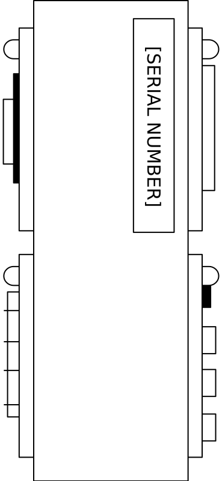 poka |
ilo pi weka pakala
lon ilo pakala wan la ilo lili mute pi weka pakala li lon. o pona e ilo lili ni. nasin tenpo pi ilo lili li lon ala. sina ken pona e ona lon tenpo wile.
nasin pi pona ona li lon kulupu lipu nanpa wan. ilo pi lukin awen li ante, li lon kulupu lipu nanpa tu.
pali ike
sona pi nanpa pakala
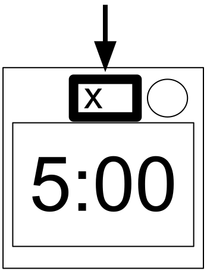
jan pi pona ilo li pali ike, la ilo li suli e nanpa pakala. sona pi nanpa pakala li lon sewi pi ilo tenpo. ona li lon la ilo li pakala lon pali ike nanpa tu wan. pali ike li lon la ilo tenpo li kama wawa.
sona pi nanpa pakala li lon ala la ilo li pakala lon pali ike nanpa wan. sina ken ala pali ike.
alasa sona
tenpo la nasin pi pona ilo li wile e sona ilo, e nanpa ilo. sona ni li lon sewi, lon anpa, lon poka pi selo ilo. o lukin e lipu pini A, B, C tawa nasin pi sona ilo. ni li ken pona tawa pona ilo.
o awen toki la ala li pakala v. 1
lipu wan: ilo pi weka pakala
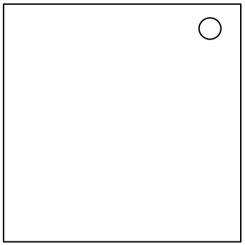
lipu wan: ilo pi weka pakala
ijo li jo e suno sike lon sewi ona la ona li ilo pi weka pakala. suno ni li laso la ilo ni li pona.
sina wile pakala ala la ilo ale o pona.
o awen toki la ala li pakala v. 1
linja
linja la
mi tawa lon linja… taso mi toki ala lon olin a!
- ni li ken jo e linja mute.
- o tu e linja wan taso.
- linja nanpa wan li lon sewi. linja pini li lon anpa.
|
linja tu wan: linja loje li lon ala la, o tu e linja nanpa tu. ante la, linja pini li walo la, o tu e linja pini. ante la, linja laso li lon li wan ala la, o tu e linja laso pini. ante la, o tu e linja pini. |
|
linja tu tu: linja loje li lon li wan ala la, o lukin e nanpa ilo. nanpa pini li 1 li 3 li 5 li 7 li 9 la, o tu e linja loje pini. ante la, linja pini li jelo la, linja loje li lon ala la, o tu e linja nanpa wan. ante la, linja laso li wan la, o tu e linja nanpa wan. ante la, linja jelo li lon li wan ala la, o tu e linja pini. ante la, o tu e linja nanpa tu. |
|
linja tu tu wan: linja pini li pimeja la, o lukin e nanpa ilo. nanpa pini li 1 li 3 li 5 li 7 li 9 la, o tu e linja nanpa tu tu. ante la, linja loje li wan la, linja jelo li lon li wan ala la, o tu e linja nanpa wan. ante la, linja pimeja li lon ala la, o tu e linja nanpa tu. ante la, o tu e linja nanpa wan. |
|
linja tu tu tu: linja jelo li lon ala la, o lukin e nanpa ilo. nanpa pini li 1 li 3 li 5 li 7 li 9 la, o tu e linja nanpa tu wan. ante la, linja jelo li wan la, linja walo li lon li wan ala la, o tu e linja nanpa tu tu. ante la, linja loje li lon ala la, o tu e linja pini. ante la, o tu e linja nanpa tu tu. |
o awen toki la ala li pakala v. 1
nena suli
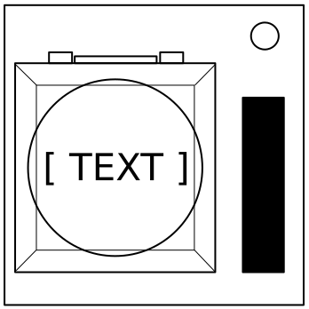
nena suli la
sina pilin e ni: nena li wile e luka sina la sina o luka e ona. taso, ni li pakala e sina!
sina wile e sona pi nimi selo la o lukin e lipu pini A.
sina wile e sona pi palisa wawa la o lukin e lipu pini B.
o kute e lawa ni tan open tawa pini. toki lon nanpa wan la o pali sama lawa:
- nena li laso li toki e nimi ”pini” la o awen luka e nena o lukin e nasin pi pini luka.
- poki wawa li lon li wan ala la nena li toki e nimi “pakala” la o luka e nena kepeken tenpo lili.
- nena li walo la suno li jo e nimi “CAR” la o awen luka e nena o lukin e nasin pi pini luka.
- poki wawa li lon li wan ala li tu ala la linja li suno e nimi “FRK” la o luka e nena kepeken tenpo lili.
- nena li jelo la o awen luka e nena o lukin e nasin pi pini luka.
- nena li loje li toki e nimi “awen luka” la o luka e nena kepeken tenpo lili.
- lawa ante ale li ken ala la, o awen luka e nena o lukin e nasin pi pini luka.
nasin pi pini luka
sina awen luka e nena la suno li kama kule lon poka nena. kule ona la o pini luka lon tenpo wan:
- laso: nimi “4” li lon ilo tenpo la o pini luka
- walo: nimi “1” li lon ilo tenpo la o pini luka
- jelo: jelo: nimi “5” li lon ilo tenpo la o pini luka
- kule ante: nimi “1” li lon ilo tenpo la o pini luka
o awen toki la ala li pakala v. 1
nena sitelen
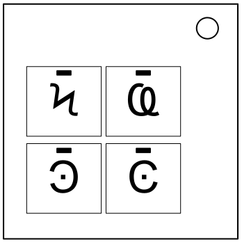
nena sitelen la
sitelen ni li nasa lukin… ona li sitelen pona anu seme?
- ilo ni li jo e nena sitelen tu tu. anpa la, palisa wan taso li jo e sitelen pi nena ni.
- sitelen pi nena sitelen li lon sewi la, o pilin e nena ni lon tenpo wan. ona li lon anpa la, o pilin e ona lon tenpo pini.

|

|

|

|
|
||||||

|
|

|

|

|
|
|||||

|

|
|
||||||||

|
|

|
||||||||

|
|
|||||||||

|
|

|

|
|||||||
|
|

|

|
o awen toki la ala li pakala v. 1
o kute a
o kute a la
ilo ni li nasa a. ona li toki kepeken suno. sina o kute e ona. seme la ni li musi? kin la, suno ona li toki ala e wile ona kepeken kule sama. nasa a.
- nena wan li suno.
- sitelen anpa ni li toki e ni: suno kule li wile e kule seme.
- nena open li suno, nena sin li suno kin. o awen kute e ona kepeken sitelen ni.
- sina kute pona e ona la kulupu pi wile ilo li kama suli. o awen ni la ilo li kama pona.
nanpa ilo li jo e kalama a e i o u la:
| suno loje | suno pi laso sewi | suno pi laso kasi | suno jelo | ||
|---|---|---|---|---|---|
| nena wile: | pakala ala | laso sewi | loje | jelo | laso kasi |
| pakala wan | jelo | laso kasi | laso sewi | loje | |
| pakala tu | laso kasi | loje | jelo | laso sewi | |
nanpa ilo li jo ala e kalama a e i o u la:
| suno loje | suno pi laso sewi | suno pi laso kasi | suno jelo | ||
|---|---|---|---|---|---|
| nena wile: | pakala ala | laso sewi | jelo | laso kasi | loje |
| pakala wan | loje | laso sewi | jelo | laso kasi | |
| pakala tu | jelo | laso kasi | laso sewi | loje | |
o awen toki la ala li pakala v. 1
toki ike musi
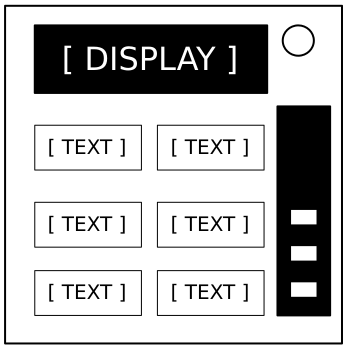
toki ike musi la
jan seme li lon kiwen nanpa wan? sina pona! jan Seme li lon a!
- o lukin e nimi suli lon ilo. lawa nanpa wan la, o sona e nimi lili wile.
- lawa nanpa tu la, o sona e nena wile kepeken nimi pi lawa nanpa wan.
- sina awen ni la, ilo li kama pona.
lawa nanpa wan:
nimi suli ilo la, o lukin e nimi pi nena oko. ni la, o tawa lawa nanpa tu.
|
|
|
|
|
|
||||||||||||||||||||||||||||||||||||||||||||||||
|
|
|
|
|
|
||||||||||||||||||||||||||||||||||||||||||||||||
|
|
|
|
|
|
||||||||||||||||||||||||||||||||||||||||||||||||
|
|
|
|
|
|
||||||||||||||||||||||||||||||||||||||||||||||||
|
|
|
|||||||||||||||||||||||||||||||||||||||||||||||||||
o awen toki la ala li pakala v. 1
toki ike musi
lawa nanpa tu:
nimi pi lawa nanpa wan la, o lukin e kulupu nimi pona. o alasa e nimi ni: nimi li nanpa wan lon kulupu nimi li lon nena ilo. o luka e nena pi nimi ni.
| "kute ala kute": | poka pini, seme, poka ni, ni, nimi ala, jo, toki ala, anpa, kute ala kute, sewi, o toki, ala, poka open, nnnnn |
|---|---|
| "o toki": | nimi ala, seme, poka pini, ni, sewi, toki ala, poka open, ala, nnnnn, kute ala kute, anpa, poka ni, jo, o toki |
| "sewi": | anpa, ala, nnnnn, o toki, poka ni, kute ala kute, toki ala, poka pini, poka open, nimi ala, jo, seme, sewi, ni |
| "anpa": | nnnnn, toki ala, seme, ni, anpa, jo, kute ala kute, poka open, sewi, poka ni, nimi ala, ala, poka pini, o toki |
| "poka open": | ala, toki ala, seme, ni, poka pini, anpa, sewi, jo, nimi ala, poka ni, nnnnn, o toki, poka open, kute ala kute |
| "poka pini": | seme, toki ala, ala, ni, o toki, poka ni, jo, kute ala kute, poka open, poka pini, nimi ala, anpa, sewi, nnnnn |
| "poka ni": | ala, poka ni, nimi ala, poka open, kute ala kute, anpa, ni, sewi, seme, o toki, nnnnn, poka pini, jo, toki ala |
| "ala": | kute ala kute, poka open, nimi ala, poka ni, seme, poka pini, toki ala, sewi, jo, anpa, ala, ni, nnnnn, o toki |
| "nimi ala": | toki ala, nimi ala, o toki, sewi, ni, poka pini, anpa, poka ni, ala, nnnnn, jo, kute ala kute, seme, poka open |
| "toki ala": | poka pini, poka open, kute ala kute, jo, sewi, nnnnn, poka ni, toki ala, ni, nimi ala, ala, anpa, seme, o toki |
| "ni": | anpa, kute ala kute, seme, poka ni, poka open, jo, sewi, nnnnn, nimi ala, ni, toki ala, o toki, ala, poka pini |
| "seme": | ni, sewi, o toki, poka pini, ala, poka open, nnnnn, seme, nimi ala, kute ala kute, anpa, jo, poka ni, toki ala |
| "nnnnn": | ala, sewi, anpa, seme, poka pini, nimi ala, o toki, jo, poka ni, nnnnn, poka open, kute ala kute, toki ala, ni |
| "jo": | toki ala, ni, poka pini, kute ala kute, jo, seme, poka open, ala, anpa, nimi ala, o toki, poka ni, sewi, nnnnn |
| "sina": | a a, pona, ante, o awen, sona ala, nimi, ken, lukin ala, ni mi, sina, ni li, seme a, ona li, toki |
| "pona": | ante, sona ala, seme a, nimi, ni mi, ona li, ni li, lukin ala, sina, toki, o awen, a a, ken, pona |
| "ante": | ni li, pona, nimi, ante, sona ala, ken, a a, toki, o awen, sina, ni mi, lukin ala, seme a, ona li |
| "o awen": | sina, o awen, ken, sona ala, ni li, pona, toki, ante, ni mi, nimi, a a, ona li, seme a, lukin ala |
| "ken": | ona li, toki, ken, nimi, ni mi, a a, ante, lukin ala, o awen, seme a, sona ala, ni li, pona, sina |
| "toki": | nimi, a a, sona ala, ni mi, o awen, ken, ni li, ona li, toki, sina, seme a, lukin ala, pona, ante |
| "nimi": | nimi, ante, pona, sina, ona li, lukin ala, ni li, sona ala, a a, seme a, o awen, ken, toki, ni mi |
| "ni li": | ken, toki, pona, o awen, sona ala, ni li, ona li, sina, nimi, seme a, ante, a a, lukin ala, ni mi |
| "ni mi": | sina, lukin ala, o awen, ante, toki, ona li, ni li, seme a, pona, nimi, ken, sona ala, ni mi, a a |
| "ona li": | a a, nimi, sona ala, ni mi, ante, ken, o awen, lukin ala, seme a, sina, toki, pona, ni li, ona li |
| "sona ala": | ni mi, nimi, ni li, ante, lukin ala, a a, sona ala, seme a, ona li, pona, ken, o awen, toki, sina |
| "lukin ala": | pona, toki, ona li, ni li, sina, ken, a a, ni mi, o awen, sona ala, lukin ala, nimi, ante, seme a |
| "a a": | pona, ona li, seme a, o awen, sina, lukin ala, nimi, ken, a a, toki, ni mi, sona ala, ante, ni li |
| "seme a": | o awen, sona ala, toki, ken, lukin ala, ona li, ni li, ni mi, nimi, sina, seme a, a a, pona, ante |
o awen toki la ala li pakala v. 1
sona pi tenpo pini
sona pi tenpo pini la
sona pi tenpo pini li pakala lon tenpo mute. taso ijo ale li ni lon pakala ilo. ni la o sona wawa!
- sina luka e nena pona la sina kama tawa tenpo nanpa sin. sina pali pona lon tenpo ale la ilo lili li kama pona.
- sina pali ike la ilo lili li tawa tenpo nanpa wan. 1.
- toki pi lon nena li tan poka open li tawa poka pini.
tenpo nanpa 1:
ilo li toki e 1 la o luka e nena nanpa tu.
ilo li toki e 2 la o luka e nena nanpa tu.
ilo li toki e 3 la o luka e nena nanpa tu wan.
ilo li toki e 4 la o luka e nena nanpa tu tu.
tenpo nanpa 2:
ilo li toki e 1 la o luka e nena pi nimi "4".
ilo li toki e 2 la o luka e nena ni: lon ona li sama nena pona
pi tenpo nanpa 1.
ilo li toki e 3 la o luka e nena nanpa wan.
ilo li toki e 4 la o luka e nena ni: lon ona li sama nena pona
pi tenpo nanpa 1.
tenpo nanpa 3:
ilo li toki e 1 la o luka e nena ni: nimi ona li sama nena pona
pi tenpo nanpa 2.
ilo li toki e 2 la o luka e nena ni: nimi ona li sama nena pona
pi tenpo nanpa 1.
ilo li toki e 3 la o luka e nena nanpa tu wan.
ilo li toki e 4 la o luka e nena pi nimi "4".
tenpo nanpa 4:
ilo li toki e 1 la o luka e nena ni: lon ona li sama nena pona
pi tenpo nanpa 1.
ilo li toki e 2 la o luka e nena nanpa wan.
ilo li toki e 3 la o luka e nena ni: lon ona li sama nena pona
pi tenpo nanpa 2.
ilo li toki e 4 la o luka e nena ni: lon ona li sama nena pona
pi tenpo nanpa 2.
tenpo nanpa 5:
ilo li toki e 1 la o luka e nena ni: nimi ona li sama nena pona
pi tenpo nanpa 1.
ilo li toki e 2 la o luka e nena ni: nimi ona li sama nena pona
pi tenpo nanpa 2.
ilo li toki e 3 la o luka e nena ni: nimi ona li sama nena pona
pi tenpo nanpa 4.
ilo li toki e 4 la o luka e nena ni: nimi ona li sama nena pona
pi tenpo nanpa 3.
o awen toki la ala li pakala v. 1
toki suno
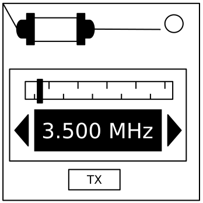
toki suno la
sina pana e telo lukin. ni li tan seme? ilo ni li wile e wawa mute li pana e pilin ike, taso sina wile lukin e suno suno lon tenpo suli kin.
sina pana e telo oko. ni li tan seme a? sina wile lukin wawa e suno lon tenpo suli. ni li pana e pilin ike tawa oko sina. kin la… ilo ni li ike.
- o lukin e ilo suno. ona li toki kepeken suno. sitelen anpa la, o kama sona e toki suno.
- toki suno li pini la, ilo suno li kama toki sin lon tenpo suli. toki li sama.
- sina sona e toki suno la, o lukin e sitelen anpa. ni la, o lawa e ilo kepeken nanpa pona. kin la, o luka e nena pi nimi TX.
| sona sitelen |
|---|
|
1. suno pi tenpo lili li sike. 2. suno pi tenpo suli li linja. 3. nimi wan li pini la, ilo suno li suno ala lon tenpo suli. 4. toki ale li pini la, ilo suno li suno ala lon tenpo pi suli mute. |
| toki suno li ni la… | o lawa e ilo kepeken nanpa ni: |
|---|---|
| akesi | 3.505 MHz |
| kalama | 3.515 MHz |
| alasa | 3.522 MHz |
| kepeken | 3.532 MHz |
| kiwen | 3.535 MHz |
| kulupu | 3.542 MHz |
| linja | 3.545 MHz |
| lukin | 3.552 MHz |
| monsi | 3.555 MHz |
| nanpa | 3.565 MHz |
| nasin | 3.572 MHz |
| pakala | 3.575 MHz |
| palisa | 3.582 MHz |
| pilin | 3.592 MHz |
| sitelen | 3.595 MHz |
| sijelo | 3.600 MHz |
o awen toki la ala li pakala v. 1
linja nasa
linja nasa la
tenpo mute la, toki lili li pona. sitelen anpa li toki lili. ni li pona ala pona?
- o lukin e ilo linja. linja ale la, ilo suno li lon sewi. ken la, sitelen mun ni li lon anpa: ★.
- o lukin e sitelen anpa. ni la, o tu e linja.
- linja ale li ken jo e kule mute.
| linja li jo e loje | |
| linja li jo e laso | |
| sitelen mun (★) li lon | |
| ilo suno li suno |
| nimi | lawa |
|---|---|
| T | o tu e linja |
| A | o tu ala e linja |
| N | o lukin e nanpa ilo. nanpa pini li 0 li 2 li 4 li 6 li 8 la, o tu e linja. |
| L | o lukin e lupa lili pi selo ilo. selo li jo e lupa Parallel la, o tu e linja. |
| P | o lukin e poki wawa pi selo ilo. poki wawa li lon li wan ala la, o tu e linja. |
sina wile e sona pi poki wawa la, o lukin e lipu pini B.
sina wile e sona pi lupa lili la, o lukin e lipu pini C.
o awen toki la ala li pakala v. 1
Wire Sequences
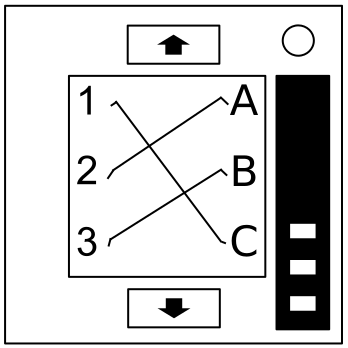
nasin nanpa pi linja mute la
ilo ni li pali kepeken nasin seme? pali ona li wawa a, taso nasin pona pi pali ni li lon tawa linja luka tu tu, anu seme.
- ilo ni la linja mute li lon sinpin mute. sina ken lukin e sinpin wan taso lon tenpo wan. o tawa sinpin anpa kepeken nena anpa. o tawa sinpin sewi kepeken nena sewi.
- sina tu ala e linja wile ale la o tawa sinpin anpa ala.
- o tu e linja kepeken nasin ni. tenpo nanpa linja li sin ala lon sinpin ale lon ilo wan pi weka pakala.
| linja loje | |
|---|---|
| tenpo nanpa linja | lon ni la o tu: |
| loje nanpa wan | C |
| loje nanpa tu | B |
| loje nanpa tu wan | A |
| loje nanpa tu tu | A anu C |
| loje nanpa luka | B |
| loje nanpa luka wan | A anu C |
| loje nanpa luka tu | A anu B anu C |
| loje nanpa luka tu wan | A anu B |
| loje nanpa luka tu tu | B |
| linja laso | |
|---|---|
| tenpo nanpa linja | lon ni la o tu: |
| laso nanpa wan | B |
| laso nanpa tu | A anu C |
| laso nanpa tu wan | B |
| laso nanpa tu tu | A |
| laso nanpa luka | B |
| laso nanpa luka wan | B anu C |
| laso nanpa luka tu | C |
| laso nanpa luka tu wan | A anu C |
| laso nanpa luka tu tu | A |
| linja pimeja | |
|---|---|
| tenpo nanpa linja | lon ni la o tu: |
| pimeja nanpa wan | A anu B anu C |
| pimeja nanpa tu | A anu C |
| pimeja nanpa tu wan | B |
| pimeja nanpa tu tu | A anu C |
| pimeja nanpa luka | B |
| pimeja nanpa luka wan | B anu C |
| pimeja nanpa luka tu | A anu B |
| pimeja nanpa luka tu wan | C |
| pimeja nanpa luka tu tu | C |
o awen toki la ala li pakala v. 1
tomo pi sinpin mute
tomo pi sinpin mute la
o awen e sona pi lon sina! o awen e sona pi lon pini! o awen e sona pi lon lupa tomo! a, mi lon seme...
- sitelen anpa wan taso li jo e sike sama sike ilo.
- jan pi pona ilo li lon suno walo lili. ona o tawa mun loje lili kepeken nena tu tu.
- o sona! sitelen anpa li toki e lon sinpin. jan pi pona ilo li ken ala lukin e sinpin ni. o tawa ala sinpin ni.
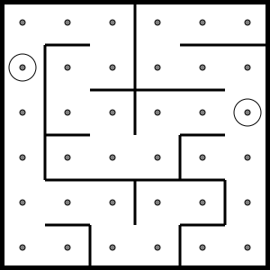

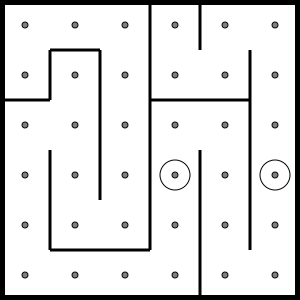

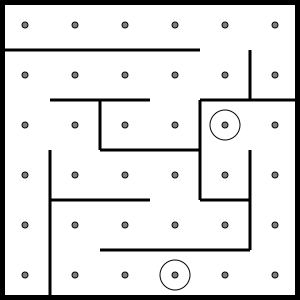
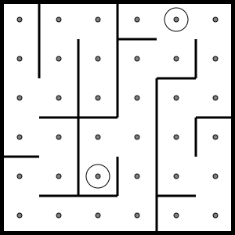


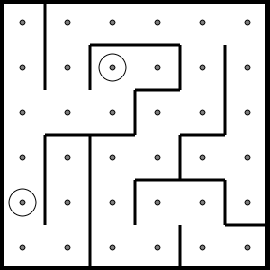
o awen toki la ala li pakala v. 1
nimi pi sona ala
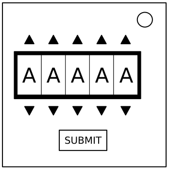
nimi pi sona ala la
jan ike li wile e sona sina. sina wile awen e sona la, o kepeken ala nimi ni!
- nimi li lon ilo. nimi wan ale la, nena sewi en nena anpa li lon. nena ni li ante e nimi. nimi wan ale li ken tu tu tu.
- o lukin e sitelen anpa. ni li jo e nimi suli mute. nimi ilo li ken pali e nimi suli wan. o alasa e ni.
- sina pali e nimi suli pona lon ilo la, o luka e nena pi nimi SUBMIT.
| alasa | akesi | apeja | epiku | kiwen |
| linja | lukin | monsi | nanpa | nasin |
| pilin | tenpo | tonsi | utala | panla |
| kanse | kenli | usawi | konwe | ojuta |
| posan | elena | sutan | asija | sonko |
| nijon | sensa | apika | elopa | konko |
| awisi | isale | lanka | ekato | tansi |
o awen toki la ala li pakala v. 1
lipu nanpa tu: ilo pakala pi wile ike
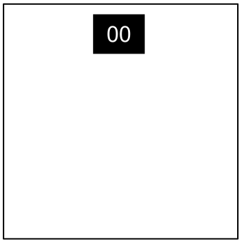
lipu nanpa tu: ilo pakala pi wile ike
ilo ni li awen wile e pona lon tenpo ale. sina pona e ilo la, ona li ken wile e pona lon tenpo sin.
ilo ni li jo e ilo tenpo lon sewi. sina kepeken ilo ante la, ilo tenpo li ken open. ilo tenpo li pini la, sina pakala. sina pona e ilo lon tenpo pona la, sina pakala ala.
o awen lukin! ilo tenpo pi ilo ni li ken open sin lon tenpo ale.
o awen toki la ala li pakala v. 1
sina weka e kon ike
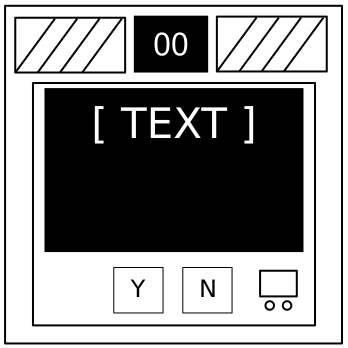
sina weka e kon ike la
ken la sina pilin e ni: ilo ni o kepeken wile mute. taso, sina ken jo e wile lili…
- ilo nanpa li wile sona la sina o luka e nena “P” anu nena “A”
- nena “P" li nimi "pona”. nena “A” li nimi “ala”.
o awen toki la ala li pakala v. 1
sina weka e wawa tan poki wawa
sina weka e wawa tan poki wawa la
mi pilin e ni: tan ni li ni: sina lukin e ni. anu la ni li nasin wawa nasa.
- poki o jo ala e wawa la o luka e palisa tawa sijelo sina
o awen toki la ala li pakala v. 1
palisa lili pi tawa sike
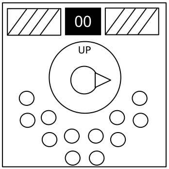
palisa lili pi tawa sike la
sewi li anpa. anpa li sewi. tenpo li pini. sina moli.
- sina ken tawa sike e palisa lili. ona li ken lon sewi lon anpa lon poka open lon poka pini.
- ilo ni li jo e ilo suno. ilo suno mute li suno. ilo ante li suno ala.
- ilo tenpo li pini la, palisa li lon nasin ike la, sina pakala.
- o sona! nimi “UP” li lon ilo. nasin pi nimi ni li ken ante. nasin sewi li nasin sin ni.
kulupu pi ilo suno
nasin sewi:
| X | X | X | |||
| X | X | X | X | X |
| X | X | X | |||
| X | X | X | X |
nasin anpa:
| X | X | X | |||
| X | X | X | X | X |
| X | X | X | |||
| X | X |
nasin pi poka open:
| X | |||||
| X | X | X | X |
| X | |||||
| X | X |
nasin pi poka pini:
| X | X | X | X | X | |
| X | X | X | X |
| X | X | X | |||
| X | X | X | X |
X = ilo suno li suno
o awen toki la ala li pakala v. 1
lipu pini A
lipu pini A: nimi selo la
suno li lon selo pi ilo pakala. suno ni li jo e nimi.
nimi ni li lon mute
- SND
- CLR
- CAR
- IND
- FRQ
- SIG
- NSA
- MSA
- TRN
- BOB
- FRK
o awen toki la ala li pakala v. 1
lipu pini B
lipu pini B: poki wawa
poki wawa li lon selo pi ilo pakala.
| poki wawa | nimi |
|---|---|
| AA | |
|
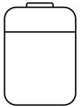 |
D |
o awen toki la ala li pakala v. 1
lipu pini C
lipu pini C: lupa lili
lupa lili li lon selo pi ilo pakala.
| lupa lili | nimi |
|---|---|
|
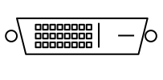 |
DVI-D |
| Parallel | |
| PS/2 | |
| RJ-45 | |
| Serial | |
| Stereo RCA |